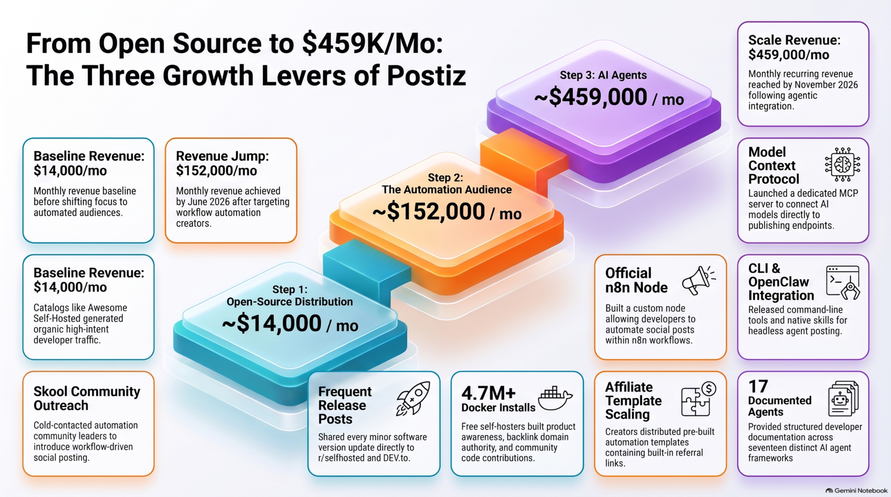
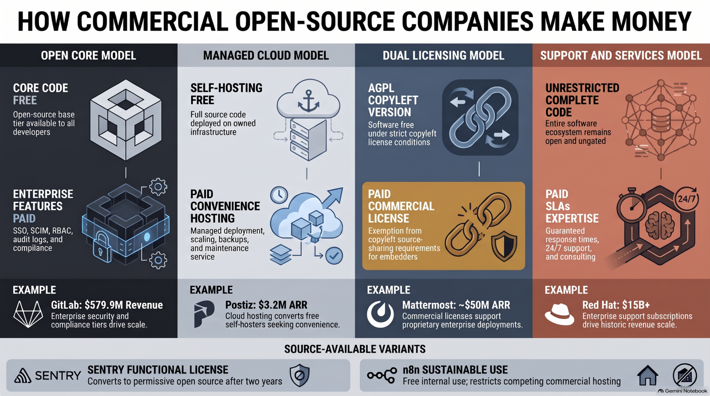
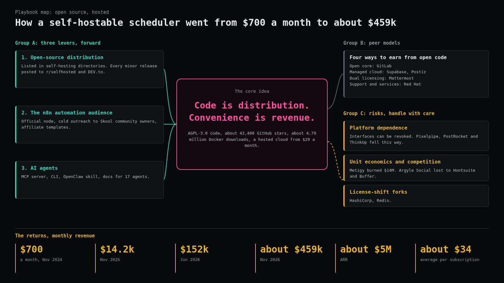

The model
Free code creates friction-free distribution. Hosted infrastructure is what you sell.
The commercial open-source model splits software distribution from operational maintenance. You publish the core source under a copyleft or permissive license, which removes the usual SaaS buyer friction and seeds global developer adoption.[9][12] You make money when non-technical users, time-poor developers, or growing teams decide they would rather pay for managed hosting, pre-approved platform access and automatic upkeep than run the thing themselves.[10][11]
- Friction-free distribution. A public repository is a global marketing engine. Auditable code kills buyer skepticism, drives inbound search authority, and community pull requests speed up development without new headcount.[10][11]
- No feature gating. Instead of walling features behind a paywall, you monetize server administration, ready-made OAuth platform approvals, managed API keys and uptime.[3][9]
- A self-funding flywheel. Free tiers capture mindshare across developer forums and automation communities. High-intent buyers self-select into the paid cloud tier to buy back time.[10][12]
Traditional SaaS spends heavily on cold outbound to convince skeptical buyers to try a black box. Open source flips it: the software spreads for free to build trust, and the transaction moves from buying access to code to buying operational convenience.[8]
The case: Postiz
An agentic social scheduler: 30-plus networks, a free AGPL codebase, and a paid cloud behind it.
Postiz, founded by Nevo David, is the worked example.[13] It schedules, automates and analyzes content across 30-plus social networks, and it exposes agent surfaces so AI assistants can post on a user's behalf.[1][3] The code is public under AGPL-3.0.[1] The money comes from the hosted cloud.[3]
| Layer | Implementation | Why |
|---|---|---|
| Monorepo | pnpm workspaces | One package and workspace graph across apps and shared libraries |
| Frontend | Next.js (React) | Fast dashboard rendering, client interactions and SSR |
| Backend | NestJS | Modular, scalable API orchestration |
| Data and ORM | Prisma on PostgreSQL | Turnkey migrations, no proprietary database lock-in |
| Cache and queue | Redis with BullMQ | Caching, rate limiting, job queue |
| Orchestration | Temporal | Fault-tolerant multi-platform publishing with retry state |
| Resend | Transactional notifications and alerts |
The Docker image was the first thing the community asked for and the first thing built.[13] Self-hosters deploy it through Coolify, Portainer or Unraid.[1] Those downloads pay nothing, and they generate support tickets, but they also carry the links, stars and bug reports a one-person company cannot buy.[13][15]
The revenue timeline
Sixteen flat months at a few thousand a month, then fifteen-times growth in ten months.[2][5]
Two sources are in play here. Before November 2025 the figures are the founder's own posts, grade C.[13] From November 2025 they are Stripe figures read by TrustMRR through an API key, grade A.[2]
| Date | Revenue | Evidence |
|---|---|---|
| Nov 2024 | ~$700 / mo | founder[13] |
| Jan 2025 | ~$2,100 / mo | founder[13] |
| Jul 2025 | $6,523 / mo | founder[13] |
| Aug 2025 | $12,648 / mo | founder[13] |
| Nov 2025 | $14,200 (post) / $16,049 (Stripe) | Stripe[2] |
| Feb 2026 | ~$46,000 / mo | Stripe[2] |
| Jun 2026 | ~$152,000 / mo ($113k MRR, $1.3M ARR) | Stripe[2][5] |
| Sep 2026 | ~$248,000 / mo | Stripe[2] |
| Oct 14 2026 | $3.1M ARR (~$258k+ MRR) | founder[5][16] |
| Nov 2 2026 | $375,142 MRR, $1.69M all-time | Stripe[2] |
| Nov 24 2026 | ~$459k MRR, ~$5M ARR | Stripe[2][5] |
Two clean-ups on the numbers. The August 2025 figure comes from a post that mislabels the year as 2024; the surrounding timeline puts it in 2025.[13] The Nov 2 subscriber count was corrected from a typo in the source to the verified 10,302 active subscribers.[2] The founder's own profile lags the Stripe data, so his hand-written figures run lower than the processor's.[2][13]
Three levers, three revenue levels
Open-source distribution
Listed in the self-hosting directories, with every minor release posted to r/selfhosted and DEV.to.[10][13]
Lever 1: open-source distribution
Get listed where self-hosters already look, and let every minor release count as news.
- Directory seeding. Submit the repo to curated aggregators like Awesome Self-Hosted, Awesome OSS Alternatives and Open Alternative. Each listing is a high-authority backlink and a direct route from a developer searching for a solution to the code.[10][12]
- Micro-release marketing. Do not wait months to ship a big update. Treat every minor feature and fix as a numbered public version, and post the notes to r/selfhosted and DEV.to. Because the product is open source, "new version, five new platforms" reads as genuine progress, not an ad, so you can keep coming back.[10][13]
- Community-driven adaptation. Build what early issues ask for. When the community asked for one-command deployment, Postiz shipped the Docker image first, and that drove container usage past 4.79 million downloads.[1][13]

Lever 2: automation ecosystems
The step change came from changing the audience, not the product.
Postiz doubled monthly revenue from $6,523 to $12,648 in a single month by pivoting into the workflow automation crowd, specifically n8n.[13][6]
- Find the niche. Automation creators on YouTube and Skool were building communities around viral AI workflows. Freelancers were used to extract the community leaders and contacts.[13]
- Protect deliverability. Cold email ran from dedicated secondary domains, warmed up with deliverability tooling, so the primary domain's reputation stayed clean.[13]
- Outsource the selling. Community moderators built ready-made n8n templates that carried Postiz affiliate links. Third-party creators became a sales force at zero upfront acquisition cost.[13][6]
- Retention bonus. Users who run software through background workflows churn less than people who log into a dashboard, because the workflow keeps posting without anyone opening the app.[6]
Lever 3: agents and the MCP server
The product became the part an agent calls to post.
The vertical move was repositioning from a tool for marketers to infrastructure for AI agents. Postiz exposed Model Context Protocol servers, a CLI, and connectors for the assistants people actually use.[1][3]
- Agentic surface first. An MCP server in April 2025, a CLI, an OpenClaw skill in January 2026, and documentation for 17 agents. Revenue multiplied fifteen times between November 2025 and September 2026, the months agent frameworks spread.[2][13]
- Free developer magnets. Nevo's Brain, a free MCP server that plugs a growth playbook into an assistant, is a zero-friction top of funnel that draws developers toward the paid cloud.[13]
- The intelligence is the customer's. Postiz sells the publishing layer with per-network rules, media upload and a human-approved calendar. It is honest positioning: the AI lives in the buyer's agent, not in Postiz.[3][6]
Packaging and unit economics
Same features in both editions. You pay for convenience, not access.
Core features stay un-gated so trust survives. Conversion is driven by offloading the ugly parts: platform developer-app approvals that take weeks for self-hosters, and server upkeep.[3]
| Area | Self-hosted (free) | Cloud (paid) |
|---|---|---|
| Cost | Free forever, AGPL-3.0, infra only | Subscription per plan, 7-day trial |
| Setup | Self-managed Docker, Coolify or Railway | Turnkey sign-up, connect channels in minutes |
| Platform apps | You create your own developer apps, weeks of approvals | Pre-approved apps built in |
| Limits | Unlimited channels and posts | Capped per tier |
| AI credits | Bring your own API keys | Included quotas, managed |
| Maintenance | Yours to do | Automated updates, backups, uptime |
| MCP and CLI | Point it at your own host | Fully hosted, ready to use |
Plans run $29 to $99 a month, roughly $23 to $79 billed yearly.[3] On the October 2026 Stripe figures, MRR of $262,899 across 7,683 subscriptions works out to about $34 per subscription a month, which puts most customers on the cheaper Standard or Team tiers.[2] That average is the catch: with revenue per user that low, a small rise in churn costs a lot of customers.
The four commercial open-source models
Every COSS business balances community adoption against commercial capture in one of four ways.

Open core
The core stays open source. Enterprise capabilities like SSO, SCIM, RBAC and audit logs live in a proprietary directory.[8][9]
Examples: GitLab, PostHog, Langfuse, Carbon, WPDeveloper
Managed cloud
You sell convenience, uptime, compliance and infrastructure management rather than code access. Postiz and Supabase live here.[9][12]
Examples: Supabase, Grafana Labs, xCloud, Postiz Cloud
Dual licensing
Copyleft for the community, a paid commercial license for buyers who cannot open-source their derivatives. Requires the vendor to hold all copyright via CLAs.[9]
Examples: Mattermost, Ever Gauzy
Peer benchmarking
The model scales across devops, observability, data, workflow and CMS.
| Company | Model | License | Benchmark |
|---|---|---|---|
| GitLab | Open core (Enterprise Edition) | MIT core, /ee proprietary | $579.9M FY24 revenue, 30k+ paying customers[11] |
| Grafana Labs | Managed cloud + enterprise | Open core + proprietary cloud | $400M+ ARR, 20M users[11] |
| Supabase | Managed cloud | Apache-2.0 | $25/mo Starter to $599/mo+ Team[12] |
| n8n | Sustainable use + cloud | Fair-code (SUL) | €20/mo cloud to €667/mo self-hosted business[12] |
| Cal.com | Open core, later partly closed | MIT core, proprietary enterprise | Core released as Cal.diy (MIT)[12] |
| Postiz | Managed cloud | AGPL-3.0 | ~$459k MRR, ~$5M ARR, bootstrapped[2] |
Failure post-mortems
The ways this goes wrong are legible, and they repeat.
Unit economics collapse under support load Linvo, 2021
Nevo David's pre-Postiz startup made $5,000 a month but burned more than it earned: heavy server costs and a flood of manual support tickets, with no automated leverage and no LLMs yet. It shut down and left the founder in debt.[13][15] The lesson is the one that shaped Postiz: automation of operations is not optional.
The unpaid maintainer trap Log4j
Critical internet infrastructure, maintained by unpaid volunteers. Tidelift research puts 60% of maintainers unpaid and 60% who have quit or are considering it. The maintainer burnout trap is what turned Log4j into a global security incident.[7][8]
License shifts trigger instant forks HashiCorp, Redis
HashiCorp moved Terraform from MPL 2.0 to the Business Source License in August 2023; the community shipped OpenTofu under the Linux Foundation within 72 hours.[7][9] Redis moved off BSD in March 2024; AWS, Google and Oracle launched Valkey. Abrupt relicensing trades community trust for short-term protection, and the fork always arrives.[7][8]
Risks for the operator
The revenue is real. The exposure is real too.
Platform dependence
Every channel runs on developer approvals held by Gitroom LLC, on interfaces Meta, X and TikTok can change or revoke.[13] That is how Pixelpipe, PostRocket and ThinkUp died.[15] A security incident at the hosting provider Railway took Postiz down for about 15 hours and forced an overnight rotation of 140 keys.[14]
Solo-founder optics
The "solo, no investors" story travels well but hides the reality. Postiz later needed four remote employees across Germany, India and Israel plus paid ad help.[15][16] Selling the solo narrative while running at 200% load is how founders burn out, and he said so.[16]
Growth stunts
A staged public firing and fake source-code leak drew 400,000-plus views.[16] Excellent for attention, dangerous for trust. Judge it on brand equity versus short-term attention elasticity, not on the vanity number.
The playbook
Ten steps, in the order that mattered.
Phase 1 strategy and repository
- Pick the license. AGPL-3.0 if cloud copycats are the main threat, so network deployments must contribute back. Keep core capability un-gated to maximise adoption speed.[1][3]
- Architect a modern monorepo. Next.js front end, NestJS back end, Prisma on PostgreSQL, Redis with a job queue, a workflow engine, transactional email. Ship a clean Docker Compose file for frictionless self-hosting.[1]
- Set the OAuth boundaries. Use only official, platform-approved OAuth flows. No credential scraping. Keep user tokens inside the self-hosted deployment.[1]
Phase 2 launch and seeding
- Seed the directories. Submit to Awesome Self-Hosted, Awesome OSS Alternatives and Open Alternative. Treat these as primary launch vectors, not afterthoughts.[10][12]
- Adopt a micro-release cadence. Post every minor version to r/selfhosted and DEV.to, framed as project progress rather than advertising.[10][13]
Phase 3 automation ecosystems
- Build the integrations. Ship native nodes for n8n and Make.com, built with AI coding tools from public API specs, and publish clear docs.[13]
- Do value-first outreach. Find niche automation leaders in Skool groups and on YouTube. Cold-email them a ready-made template plus a high-commission affiliate link.[13]
- Sell the workflow, not the UI. Automated users churn less and carry higher lifetime value.[6]
Takeaways

Cite this
Ember, "Blueprinting Commercial Open Source," v1.0, 2026-11-25, https://mphinance.github.io/mphinance/artifacts/open-source-hosted-playbook/
Sources
Bracketed numbers in the text point to this list. They are additive: the Stripe-verified and founder-reported tags still mark the grade of each figure.
- https://github.com/gitroomhq/postiz-apparchived
- https://trustmrr.com/startup/postizarchived
- https://postiz.com/pricingarchived
- https://aiolum.com/story/postizarchived
- https://www.arr.club/signal/postiz-hit-5m-arr-adding-2m-in-a-month-fully-bootstrappedarchived
- https://wouldit.work/case-studies/postizarchived
- https://www.linuxfoundation.org/hubfs/Research%20Reports/LFResearch_COSSReport_102926.pdfarchived
- https://opencoreventures.com/insights/the-open-core-paradoxarchived
- https://ossalt.com/guides/open-source-business-models-how-oss-companies-make-moneyarchived
- https://www.readsignal.io/article/open-source-growth-engine-2026archived
- https://startise.com/how-open-source-businesses-are-balancing-growtharchived
- https://www.ithub.directory/blog/how-do-open-source-companies-make-moneyarchived
- https://dev.to/nevodavid/i-did-it-my-open-source-company-now-makes-142k-monthly-as-a-single-developer-1179archived
- https://news.ycombinator.com/item?id=46076878archived
- https://danraine.substack.com/p/he-gives-his-software-away-free-itarchived
- https://x.com/wickedguro/status/2112240445187031273